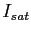
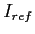
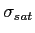

Next: 4.8 Viewing the results Up: 4. Calculating the NOE Previous: 4.6 Unresolved residues Contents Index
At this point the NOE can be calculated. The user function
calc()
will calculate both the NOE and the errors. The NOE value will be calculated using the formula
 |
(theparentequation.1) |
where  is the intensity of the peak in the saturated spectrum and  is that of the reference spectrum. The error is calculated by
| (theparentequation.2) |
where

and
 are the peak intensity errors in the saturated and reference spectra respectively. To create a file of the NOEs the command
are the peak intensity errors in the saturated and reference spectra respectively. To create a file of the NOEs the command
value.write(param=`noe', file=`noe.out', force=True)
will create a file called noe.out with the NOE values and errors. The force flag will cause any file with the same name to be overwritten. An example of the format of noe.out is
Num Name Value Error 1 GLY None None 2 PRO None None 3 LEU None None 4 GLY 0.12479588727508535 0.020551827436105764 5 SER 0.42240815792914105 0.02016346825976852 6 MET 0.45281703194372114 0.026272719841642134 7 ASP 0.60727570079478255 0.032369427242382849 8 SER 0.63871921623680161 0.024695665815261791 9 PRO None None 10 PRO None None 11 GLU None None 12 GLY 0.92927160307645906 0.059569089743604184 13 TYR 0.88832516377296256 0.044119641308479306 14 ARG 0.84945042565860407 0.060533543601110441